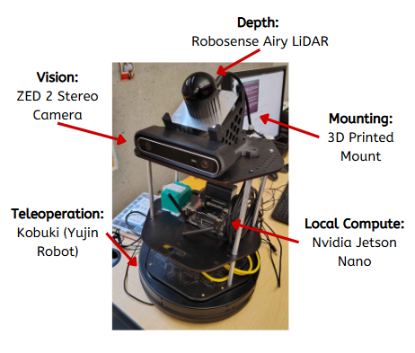
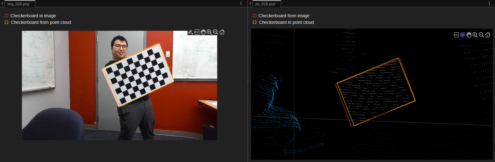
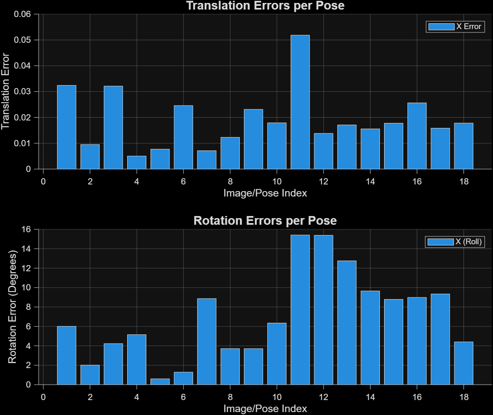
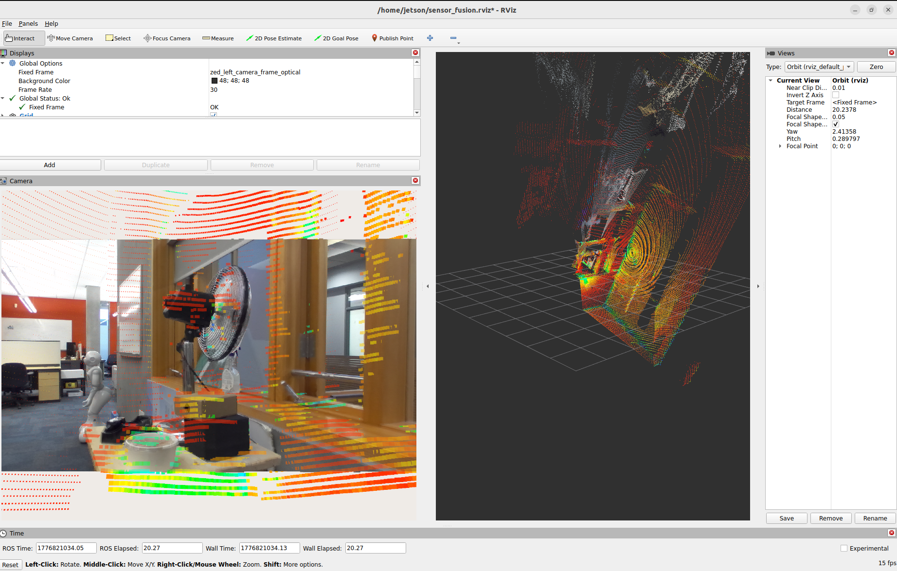

Abstract
This project builds a calibrated, synchronized data-collection rig on a mobile robot using a Robosense AIRY 3D LiDAR and an RGB camera mounted on a Turtlebot2. The robot is teleoperated to collect time-synced LiDAR pointclouds and camera images for indoor mapping and perception research. The system extends off-the-shelf ROS 2 sensor drivers with a complete calibration pipeline: camera intrinsic and extrinsic calibration, LiDAR–camera extrinsic 6-DOF calibration, and a repeatable launch/data-recording workflow. The end result is a ROS 2 system that publishes correctly framed topics, supports visualization in RViz2, and can reliably record calibrated datasets. A visual interface allows raw sensor information to be observed alongside fused data representations.
Hardware
The hardware setup is built on a Turtlebot2 mobile robot platform. For depth sensing, we use a Robosense AIRY 3D LiDAR, and for visual sensing, we use a ZED stereo RGB camera operating at 1920×1080 (Full HD). All onboard processing and sensor integration are handled by an NVIDIA Jetson compute unit mounted on the robot. This combination provides synchronized 3D spatial and high-resolution visual data for our fusion pipeline.

Teleop
The teleoperation pipeline supports two input methods: keyboard control and game-controller control. Both methods interface through the Kobuki node, so the robot base receives motion commands through the same underlying driver path. For controller-based teleoperation, we use an EasySMX controller with a custom configuration file that maps joystick axes and buttons to the desired motion behavior. This setup allows quick switching between keyboard and controller operation while keeping control behavior consistent.
Calibration
Collecting Data
A diverse series of pointcloud to image pairs were collected through a custom capture script with PTP for time sync. Diversity here was more important than volume for use in calibration.
Camera Intrinsic and Extrinsic Calibration
Computed camera focal lengths, optical centers, radial and tangential distortion values using OpenCV on raw image data. The values were verified by undistorting a set of test data from the same camera.
6D Extrinsic Sensor Calibration
Imported image + point cloud pairs into MatLab’s camera-lidar calibrator. We optimized accuracy in a couple of ways:
- Region of Interest: Strict spatial bounding boxes to filter background noise.
- CAD Seeding: Injected baseline 6D transforms.
- Solver Parameters: Tight tolerance values and low downsampling.


Visualization
Calibrated transform is exported, inverted, and applied through RViz2 via a static tf2 transform.
Rviz shows the raw sensor data from the camera as a raw image with the LiDAR pointcloud mapped onto it.
